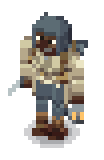
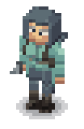
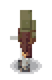
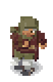

Tollbreaker Slinger
Tollbreaker Slinger is a creature of Milecairn (level 14–16).
Tollbreaker Slinger is a creature of Milecairn (level 14–16).
In the game
In the game the Tollbreaker Slinger is level 14–16, normal. It is found in The Low Toll, The Rampart Plain and Tollbreak Ridge. It can drop Carter's Bracers (2%), Causeway Boots (2%) and rarely one of 8 rare items.
Quests
Quests that ask for it: Watchers South of the Camp.
Gallery







